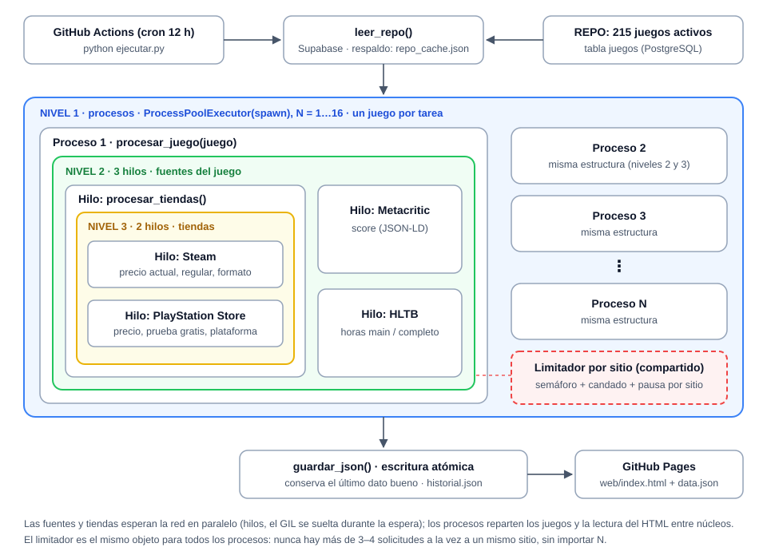
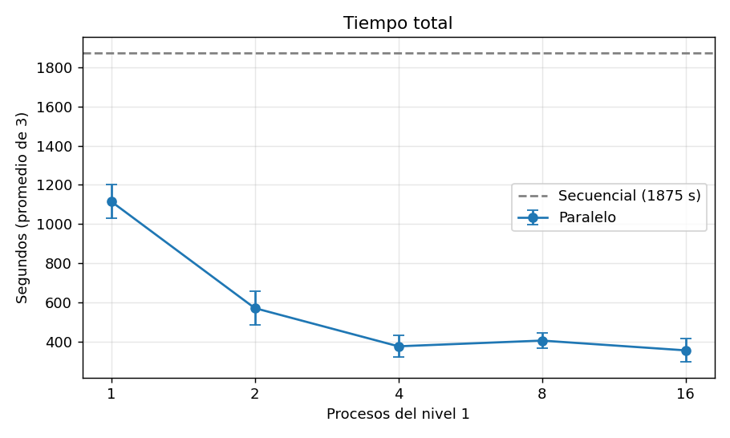
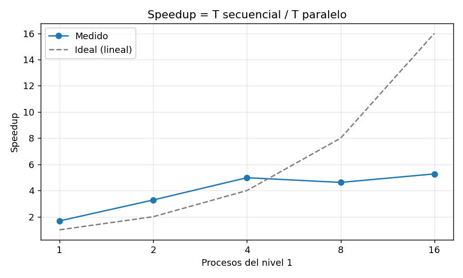
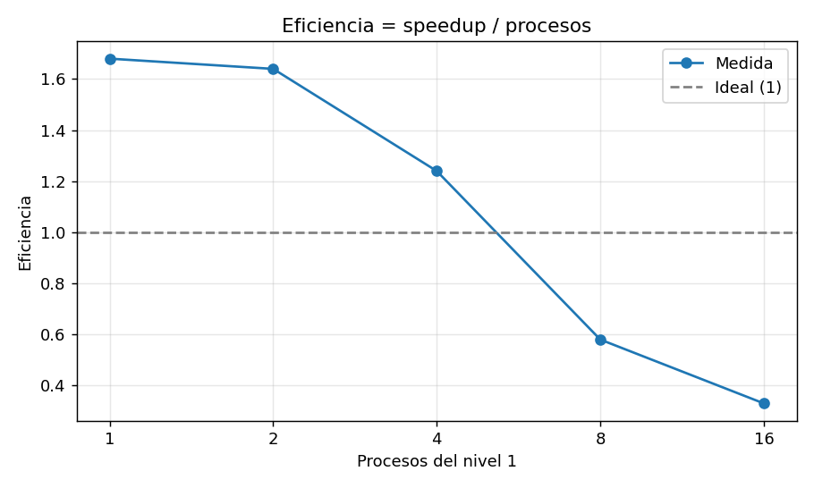

Instituto Tecnológico de Costa Rica — Campus San Carlos
IC3101 Arquitectura de Computadoras
Documento técnico
Andrew Arce Pérez
Alonso Rodríguez Bolaños
Daniel Rojas Vargas
Sitio público: https://alonso-rodriguez-bolanos.github.io/proyecto3/
Repositorio: https://github.com/alonso-rodriguez-bolanos/proyecto3
15/11/2026
El sistema lee la lista de juegos (REPO) de Supabase, consulta para cada juego dos tiendas, Metacritic y How Long To Beat usando tres niveles de paralelismo, guarda el resultado en web/data.json y lo publica en una página estática de GitHub Pages. GitHub Actions repite todo cada 12 horas.

| Componente | Archivo | Qué hace |
|---|---|---|
| Programa principal | ejecutar.py |
Lee el REPO, llama al motor, guarda el JSON y escribe las métricas de la corrida en logs/metricas.jsonl |
| Lectura del REPO | scraper/repo.py |
Descarga los juegos activos de Supabase; si falla usa la copia local datos/repo_cache.json |
| Nivel 1 | scraper/nivel1.py |
Reparte los juegos entre procesos |
| Nivel 2 | scraper/nivel2.py |
Consulta las fuentes de un juego en hilos y arma su registro |
| Nivel 3 | scraper/tiendas.py |
Consulta las tiendas de un juego en hilos |
| Scrapers | scraper/tiendas.py, metacritic.py, hltb.py |
Extraen los datos de cada sitio |
| Red | scraper/red.py |
Descarga con timeout, reintentos y el límite del sitio |
| Limitador | scraper/limitador.py |
Controla cuántas solicitudes van a cada sitio a la vez, compartido por todos los procesos |
| Guardado | scraper/guardar.py |
Combina con el JSON anterior, escribe de forma atómica y actualiza el historial de precios |
| Gestor | gestor.py |
Ventana para agregar, editar y desactivar juegos del REPO |
| Página | web/index.html |
Tarjetas, filtros, ordenamiento, detalle, comparador y rendimiento |
| Actualización | .github/workflows/actualizar.yml |
Cron de 12 h y publicación en GitHub Pages |
| Nivel | Qué se reparte | Herramienta | Cuántos | Por qué |
|---|---|---|---|---|
| 1 | Juegos | ProcessPoolExecutor con contexto spawn |
WORKERS_JUEGOS, por defecto los núcleos de la máquina |
Cada proceso tiene su propio intérprete y su propio GIL, así que es el único nivel que usa varios núcleos de verdad (por ejemplo para leer el HTML con BeautifulSoup) |
| 2 | Fuentes de un juego: tiendas, Metacritic y HLTB | ThreadPoolExecutor |
3 hilos | Las tres fuentes pasan casi todo el tiempo esperando la red; mientras esperan sueltan el GIL, así que los hilos alcanzan y son más baratos que procesos |
| 3 | Tiendas de un juego: Steam y PlayStation Store | ThreadPoolExecutor |
2 hilos | Mismo motivo: un juego tarda lo que su tienda más lenta y no la suma de las dos |
Un juego viaja así: el nivel 1 le da el juego a un proceso libre; dentro de ese proceso procesar_juego abre 3 hilos (nivel 2); el hilo de tiendas abre otros 2 hilos (nivel 3). Cuando las fuentes terminan, el registro vuelve al proceso principal, que ordena todos por id y llama a guardar_json.
Se eligió spawn en vez de fork porque es el único que existe en Windows y se comporta igual en Windows, macOS y Linux, así el benchmark y GitHub Actions corren el mismo código.
BoundedSemaphore (cuántas solicitudes a la vez), un Lock y un Value compartido con la hora del próximo turno libre. Se pasan a cada proceso hijo en el initializer del pool. Antes de cada descarga, with turno(sitio) toma un cupo del semáforo y reserva su turno dentro del candado; la espera se hace fuera del candado para no bloquear a los demás. Así, aunque haya 16 procesos, a Steam nunca le llegan más de 4 solicitudes a la vez ni a los demás sitios más de 3.multiprocessing.Queue; un solo QueueListener en el proceso principal los escribe al archivo, así las líneas no se mezclan.Future del pool (as_completed), sin memoria compartida ni candados extra. Solo el proceso principal escribe el data.json.TIMEOUT_FUENTE_S, 180 s); una fuente colgada queda con error y no detiene al juego. Al terminar se usa shutdown(wait=False, cancel_futures=True) para no esperar hilos colgados.BrokenProcessPool), sus juegos se repiten una vez en un pool nuevo; si vuelve a fallar quedan marcados con error y los demás juegos se guardan igual.data.jsonUn registro por juego:
{
"id": 12, "nombre": "Hades", "imagen": "https://…", "plataformas": ["PC", "PS5"],
"fecha_lanzamiento": "2020-09-17", "precio_sugerido": 24.99,
"tiendas": [
{"tienda": "Steam", "ok": true, "precio_actual": 6.24, "precio_regular": 24.99, "descuento_pct": 75,
"en_oferta": true, "formato": "Digital", "plataforma": "PC", "url": "https://store.steampowered.com/app/1145360/"}
],
"metacritic": {"ok": true, "score": 93},
"hltb": {"ok": true, "horas_main": 23.6, "horas_completo": 95.3},
"ultima_actualizacion": "2026-11-15T18:00:00+00:00"
}
Si una fuente falla, su entrada queda con "ok": false y el texto del error; si había un dato anterior bueno, se conserva con "desactualizado": true (sección 3.10).
El REPO es la tabla juegos en Supabase (PostgreSQL). El scraper no tiene ningún juego escrito en el código: en cada corrida lee la tabla, así que agregar, corregir o sacar un juego no requiere tocar el programa. Hoy tiene 216 juegos, 215 activos.
juegosSe crea con sql/crear_tabla.sql.
| Columna | Tipo | Obligatoria | Uso |
|---|---|---|---|
id |
bigint, identidad | sí | Identificador; ordena el data.json y une el historial de precios |
nombre |
text, único | sí | Nombre del juego; no se puede repetir |
plataformas |
text[] | sí | PC, PS4, PS5, Xbox, Switch (filtro de plataforma de la web) |
fecha_lanzamiento |
date | no | Para elegir el juego correcto en HLTB cuando hay remakes con el mismo nombre |
precio_sugerido |
numeric(6,2) | sí | Precio de lanzamiento; respaldo para calcular el descuento si la tienda no muestra el precio regular |
imagen_url |
text | no | Portada de la tarjeta |
url_steam |
text | sí | Enlace directo a Steam |
url_psstore |
text | sí | Enlace directo a PlayStation Store de EE. UU. (/en-us/) |
url_xbox, url_eshop |
text | no | Tiendas opcionales |
url_metacritic |
text | no | Página del juego en Metacritic |
url_hltb |
text | no | Página en HLTB; si trae el id se busca por id en vez de por nombre |
activo |
boolean | sí (true) |
Para sacar un juego se pone en false en vez de borrarlo |
Por qué se guardan los enlaces directos y no solo el nombre. Buscar por nombre en cada corrida es lento y se equivoca con ediciones, remakes y paquetes (por ejemplo Resident Evil 4 de 2005 contra el remake de 2023). Con el enlace directo cada corrida descarga exactamente la página correcta, y el enlace se revisa una sola vez al agregar el juego.
Seguridad. La tabla tiene row level security: cualquiera puede leer (la llave pública que usa el scraper y GitHub Actions) y solo la llave secreta puede escribir. La llave secreta solo vive en el .env de quien administra el REPO y nunca se sube a GitHub.
scraper/repo.py pide las filas con activo = true, de 1000 en 1000, ordenadas por id:
datos/repo_cache.json.id, nombre, plataformas, precio_sugerido, url_steam, url_psstore) y avisa en el log cuál fue.El REPO se administra con python gestor.py, una ventana hecha con tkinter que lee y escribe la tabla con la llave secreta:
| Acción | Qué hace |
|---|---|
| Recargar | Vuelve a leer la tabla y actualiza el respaldo datos/juegos.csv |
| Nuevo / Guardar | Agrega o edita un juego; antes de guardar valida los campos (nombre, al menos una plataforma, precio > 0, fecha AAAA-MM-DD, enlaces de Steam y PS Store de EE. UU.) |
| Buscar enlaces | Revisa la página de Steam, busca el juego en PS Store y confirma la página de Metacritic, y llena lo que falte |
| Completar todos | Hace lo mismo con todos los juegos a los que les falta algo |
| Importar CSV | Sube muchos juegos de una vez; si un nombre ya existe lo actualiza en vez de duplicarlo (on_conflict=nombre) |
| Activo | Desmarcarlo saca el juego de la próxima corrida sin perder sus datos |
Los cambios se ven en la página en la siguiente corrida automática (máximo 12 horas) o al correr el workflow a mano.
El equipo se repartió la carga en dos mitades. Para la segunda mitad se usaron dos herramientas:
herramientas/preparar_lote.py toma una lista de nombres y para cada uno busca los enlaces de Steam, PS Store, Metacritic y HLTB, el precio y la fecha; separa los que quedaron completos (datos/lote_listo.csv, 101 juegos) de los que hay que revisar a mano.herramientas/auditar_enlaces.py compara el título de cada tienda con el nombre del REPO para detectar enlaces a otra edición o a otro juego. En la revisión de los 216 juegos encontró 4 enlaces equivocados (Resident Evil 4, Death Stranding Director's Cut, Yakuza 0 y The Outer Worlds), que se corrigieron con datos/correcciones_enlaces.csv.Código: scraper/tiendas.py. Pruebas: pruebas/test_tiendas.py.
Hay una función por tienda: scrape_steam(juego), scrape_psstore(juego) y scrape_xbox(juego). Cada una recibe una fila del REPO, abre el enlace directo que el REPO guarda para esa tienda y devuelve un diccionario con este formato:
| Campo | Significado |
|---|---|
tienda |
Steam, PlayStation Store o Xbox Store |
precio_actual |
Lo que cuesta hoy en dólares |
precio_regular |
El precio sin descuento |
en_oferta, descuento_pct |
Indicador de oferta (ver 3.5) |
formato |
Digital, porque las tres tiendas venden descargas |
plataforma |
PC, PS4/PS5 o Xbox Series X\|S/Xbox One |
url |
Enlace de la página consultada |
ok |
true si se leyó el precio; si no, false y un campo error |
No se busca el juego por nombre. Se usa el enlace guardado en el REPO, así un cambio de nombre entre sitios no afecta. Todas las tiendas se piden en la región de EE. UU. para que los precios estén en dólares y se puedan comparar.
Las funciones nunca lanzan excepciones. Descargan con obtener_html y llevan el decorador @fuente_segura, los dos de scraper/red.py. Así cada solicitud respeta el límite por sitio, tiene timeout y reintentos, y si algo falla devuelve {"ok": false, "error": "..."} sin detener los demás juegos.
Página: store.steampowered.com/app/<appid>/?cc=us&l=english.
/agecheck/. Se resuelve enviando con la solicitud las cookies que Steam guarda después de esa pantalla (birthtime, lastagecheckage, mature_content, wants_mature_content). Si aun así aparece el formulario de edad, se reporta el error Steam pidió verificación de edad.#game_area_purchase, cada opción de compra es un bloque .game_area_purchase_game:.game_purchase_price muestra un solo precio y ese precio es a la vez el actual y el regular..discount_original_price es el regular, .discount_final_price el actual y .discount_pct el porcentaje.data-price-final trae el precio en centavos y se usa si el texto no se puede leer..dynamic_bundle_description), que venden varios juegos juntos, y las demos, que no tienen precio. El primer bloque que queda es la edición estándar del juego. También se saltan los bloques cuyo título dice Upgrade, Soundtrack, Season Pass, Expansion Pass o DLC: en Death Stranding Director's Cut el primer bloque era la mejora de $9.99 para quienes ya tenían el juego, y el precio real era el segundo ($39.99).Free o Free To Play se lee como precio 0.#purchase_note, por ejemplo "unlisted on the Steam store", se reporta no está a la venta en Steam.Página: store.playstation.com/en-us/concept/<id> o /en-us/product/<id>.
Con las DevTools se confirmó que la página llega con el precio ya puesto en el HTML, así que no hace falta ejecutar JavaScript.
data-qa="mfeCtaMain". Cada opción de precio es un elemento mfeCtaMain#offerN (N = 0, 1, …) con #finalPrice (precio actual) y, si hay descuento, #originalPrice (precio regular).offer0 no es un precio de compra sino el de PS Plus: su precio es "Included" o trae un descuento solo para suscriptores. Esas ofertas se reconocen porque llevan un #serviceIcon#ps-plus o un #discountInfo que menciona PlayStation Plus, EA Play o Ubisoft+, y se saltan. Se toma la primera oferta normal. En Red Dead Redemption 2, por ejemplo, offer0 dice "Included" (PS Plus Extra) y el precio de compra real está en offer1.<script>. El botón tiene un atributo data-initial con el id de un <script type="application/json"> de la misma página. Ese script trae cada precio con basePriceValue y discountedValue en centavos, junto con isTiedToSubscription. Si el HTML visible no trae una oferta que se pueda leer, se usan esos datos, descartando los que dependen de una suscripción. Leer ese script cuenta como scraping porque es parte del HTML de la página.gameInfo#releaseInformation#platform-value ("PS4, PS5"). Se reporta PS5 si el juego está para PS5 y si no PS4."prueba_gratis": true, y la web lo muestra con una etiqueta pequeña junto al nombre.PS Store no lo vende: Announced. Si la página llega sin el bloque de compra, cosa que pasó una vez en las pruebas, se pide otra vez antes de marcar el error.Página: xbox.com/en-US/games/store/<nombre>/<id>.
window.__PRELOADED_STATE__. El precio está en core2.products.productSummaries[<id>].specificPrices.purchaseable, donde listPrice es el actual y msrp el regular.eligibility = "None", que es el precio para cualquier comprador.ProductDetailsHeader-module__price).Xbox Series X|S si availableOn incluye XboxSeriesX, si no Xbox One.Función calcular_oferta(actual, regular, precio_sugerido):
precio_sugerido del REPO.precio_actual < regular.Ejemplo (Dark Souls III, PS Store, 9 nov 2026): actual $29.99 y regular $59.99, así que está en oferta con un descuento de (59.99 − 29.99) / 59.99 × 100 = 50 %.
Si la tienda está más cara que el precio sugerido, no se considera oferta: no hay descuento y el dato se muestra tal cual.
procesar_tiendas(juego, max_workers) crea un ThreadPoolExecutor y lanza un hilo por cada tienda que el juego tiene en el REPO (Steam y PS Store siempre; Xbox y eShop solo si hay enlace). Se usan hilos porque cada consulta pasa casi todo el tiempo esperando la red, y mientras espera el hilo suelta el GIL. El resultado sale en el mismo orden de tiendas para todos los juegos. Una tienda que falla queda con ok: false y no afecta a las demás.
Con max_workers = 1 las tiendas se consultan una después de otra; así funciona la versión secuencial que se usa para medir el speedup. En la prueba test_las_tiendas_corren_al_mismo_tiempo, dos tiendas que tardan 0.3 s cada una terminan en unos 0.3 s con 2 hilos y en unos 0.6 s con 1 hilo.
El límite por sitio (scraper/limitador.py) se aplica igual: aunque haya muchos procesos e hilos, nunca hay más de 4 solicitudes a la vez a Steam ni más de 3 a la PS Store, con una pausa mínima entre solicitudes.
Prueba del 9 de noviembre de 2026 con python -m scraper.tiendas 200: 115 juegos y 230 consultas a tiendas en 242 s, de forma secuencial y con el límite por sitio. Se leyeron 225 precios, 30 de ellos en oferta. Las 5 fallas fueron:
Código: scraper/metacritic.py y scraper/hltb.py. Pruebas: pruebas/test_fuentes_extra.py.
Las dos fuentes siguen las mismas reglas que las tiendas: reciben una fila del REPO, nunca lanzan excepciones (llevan @fuente_segura) y respetan el límite por sitio de scraper/limitador.py (3 solicitudes a la vez y 0.5 s entre solicitudes para cada sitio).
Página: el enlace url_metacritic del REPO, por ejemplo metacritic.com/game/hades/. No se busca por nombre: el gestor arma el enlace una vez, confirma que existe y queda guardado.
<script type="application/ld+json"> con datos estructurados de tipo VideoGame. El score está en aggregateRating.ratingValue (en Hades, 93, con reviewCount: 61). Es la fuente principal porque es un formato estándar (schema.org) que cambia poco aunque cambie el diseño.c-siteReviewScore que contiene <span>93</span>. Se usa como respaldo si el bloque JSON-LD no está.tbd y el JSON-LD no trae aggregateRating; se devuelve {"ok": false, "error": "Metacritic no muestra score"}.{"ok": true, "score": 93}.Prueba con los primeros juegos del REPO (python -m scraper.metacritic 4): Hades 93, The Witcher 3 92, Red Dead Redemption 2 97, GTA V 97.
How Long To Beat no muestra los tiempos en el HTML inicial (los carga con una búsqueda interna), así que se usa la biblioteca howlongtobeatpy, que el profesor permitió y cuenta como scraping: hace la misma búsqueda que la página.
url_hltb trae el id del juego (howlongtobeat.com/game/62941) se consulta directo con search_from_id. Si no, se busca por nombre.fecha_lanzamiento del REPO. Así Hades (2020) no se confunde con Hades II (2025).main_story (historia principal) como horas_main y completionist (100 %) como horas_completo, redondeados a un decimal. HLTB usa 0 cuando no hay dato; eso se guarda como null.obtener_html, así que hltb.py le agrega lo mismo que tienen los demás scrapers: cada consulta espera su turno con turno("hltb") y se reintenta hasta 3 veces con espera creciente (1, 2 y 4 s más un poco al azar). Si después de los reintentos sigue fallando, @fuente_segura lo convierte en {"ok": false, "error": "..."}.{"ok": true, "horas_main": 23.6, "horas_completo": 95.3}.Prueba (python -m scraper.hltb 4): Hades 23.6 / 95.3 h, The Witcher 3 51.7 / 175.4 h, Red Dead Redemption 2 50.8 / 196.3 h, GTA V 32.1 / 89.5 h.
data.jsonCódigo: scraper/guardar.py, función guardar_json(resultado, ruta).
data.json anterior. Para cada juego y cada fuente (cada tienda, Metacritic y HLTB): si la fuente falló en esta corrida pero en la anterior estaba bien, se conserva el dato anterior y se le agregan "desactualizado": true, el "error" de hoy y "dato_de" con la fecha del dato. La web muestra esos datos con un aviso "⚠ dato anterior". Cuando la fuente vuelve a responder, el dato nuevo reemplaza al viejo y la marca desaparece.fsync) y se renombra encima del anterior con os.replace, que es atómico. La web siempre ve el archivo viejo completo o el nuevo completo, nunca uno a medias. Si algo falla al escribir, se borra el temporal y el data.json anterior queda intacto.data.json, actualizar_historial agrega los precios de la corrida a web/historial.json con el formato {"id": {"Steam": [[fecha, precio], ...]}}. Solo se guarda un punto cuando el precio cambia, así el archivo crece poco aunque el cron corra dos veces al día. No se registran tiendas que fallaron ni datos conservados de una corrida anterior, para no inventar precios. También se escribe de forma atómica, y si falla no afecta al data.json. Con este historial la web dibuja el gráfico de precios de cada juego y marca los que hoy están en su mínimo histórico.Código: .github/workflows/actualizar.yml.
La regla es que un error nunca detiene la corrida ni deja la página vacía: se atrapa en el nivel más bajo posible, se registra en el log y el resto sigue.
| Dónde | Qué puede fallar | Qué se hace |
|---|---|---|
Descarga (red.py) |
Timeout, conexión caída, HTTP 429/5xx | Timeout de 5 s para conectar y 20 s para leer; hasta 3 intentos con espera exponencial (1, 2, 4 s más un poco al azar) y respetando Retry-After si el sitio lo manda |
Descarga (red.py) |
HTTP 403/404 | No se reintenta (no va a cambiar); se devuelve el error de una vez |
Límites del sitio (limitador.py) |
Saturar al sitio y que bloquee | Máximo 3–4 solicitudes a la vez por sitio y una pausa mínima entre solicitudes, compartido por todos los procesos |
Scraper (@fuente_segura) |
El HTML cambió, falta un elemento, error inesperado | El decorador atrapa cualquier excepción y devuelve {"ok": false, "error": "…"} en vez de lanzarla |
| Scraper | La página no es el juego (upgrade, DLC, prueba gratis, paquete) | Se descartan esos bloques antes de leer el precio (secciones 3.2 y 3.3) |
| Nivel 2 | Una fuente se cuelga | Tope de 180 s por juego; la fuente queda como timeout global y el juego se guarda con las demás |
| Nivel 1 | Un proceso muere | Sus juegos se repiten una vez en un pool nuevo; si falla otra vez quedan con error |
REPO (repo.py) |
Supabase no responde | Se usa la copia local datos/repo_cache.json |
| REPO | Fila incompleta | Se salta ese juego y se avisa en el log |
Guardado (guardar.py) |
Una fuente falló en esta corrida | Se conserva el último dato bueno marcado como desactualizado (sección 3.10) |
| Guardado | Se corta la luz o el disco se llena a mitad de escribir | Escritura atómica: se escribe un temporal y se reemplaza con os.replace; el data.json anterior queda intacto |
| Guardado | El resultado viene vacío | No se escribe, para no borrar la página |
Cada corrida deja un log por día en logs/scraper_AAAAMMDD.log y una línea en logs/metricas.jsonl con la duración y cuántas fallas hubo por fuente.
GitHub Actions corre el scraper con un cron cada 12 horas (0 6,18 * * *, o sea 00:00 y 12:00 en Costa Rica). Los precios de las tiendas cambian a lo sumo una vez al día, así que dos corridas diarias bastan para ver una oferta el mismo día que empieza sin cargar de más a los sitios.
También se puede correr a mano desde la pestaña Actions → Actualizar precios → Run workflow, y la página se vuelve a publicar sola (sin scrapear) cada vez que alguien cambia algo en web/.
| Paso | Qué hace |
|---|---|
| 1. Preparar | Descarga el repo, instala Python 3.12 y requirements.txt |
| 2. Scraper | python ejecutar.py con SUPABASE_URL y SUPABASE_KEY tomados de los Secrets del repositorio, nunca del código |
| 3. Log | Sube la carpeta logs/ como artefacto de la corrida (se guarda 14 días) para revisar fallas |
| 4. Guardar | Si el scraper terminó bien y el data.json cambió, lo sube al repo con un commit automático |
| 5. Publicar | Publica la carpeta web/ en GitHub Pages |
guardar_json conserva el último dato bueno y lo marca (sección 3.10). La corrida sigue normal.leer_repo usa la copia local del REPO.continue-on-error, así que no se sube nada y el paso 5 vuelve a publicar el último data.json bueno. La web nunca queda vacía.concurrency hace que una espere a la otra, para que no escriban el data.json a la vez.HTTP 403. El plan B es correr python ejecutar.py en una computadora del equipo con el Programador de tareas de Windows y subir el data.json con git; el paso 5 lo publica igual.SUPABASE_URL y SUPABASE_KEY (la llave pública de lectura; la secreta no hace falta).Medido el 15/11/2026 con python herramientas/benchmark.py. Los tiempos de cada corrida están en docs/benchmark/tiempos.csv, el resumen en docs/benchmark/resumen.csv y los gráficos en docs/benchmark/*.png.
docs/benchmark/maquina.json.datos/repo_cache.json (la misma tabla de Supabase guardada por repo.py), así todas las corridas procesan exactamente los mismos juegos.python ejecutar.py --secuencial): un proceso, y las fuentes y tiendas de cada juego una después de otra.duracion_s es el tiempo de procesar todos los juegos (sin contar leer Supabase ni escribir el JSON), medido con time.perf_counter.| Configuración | Rep. 1 (s) | Rep. 2 (s) | Rep. 3 (s) | Promedio (s) | Desv. (s) | Speedup | Eficiencia |
|---|---|---|---|---|---|---|---|
| Secuencial | 1957.9 | 1677.0 | 1988.9 | 1874.6 | 171.8 | 1.00 | 1.00 |
| 1 proceso | 1147.3 | 1019.4 | 1180.5 | 1115.7 | 85.1 | 1.68 | 1.68 |
| 2 procesos | 632.3 | 609.4 | 472.7 | 571.5 | 86.3 | 3.28 | 1.64 |
| 4 procesos | 409.8 | 408.4 | 311.6 | 376.6 | 56.3 | 4.98 | 1.24 |
| 8 procesos | 415.6 | 437.3 | 364.6 | 405.8 | 37.3 | 4.62 | 0.58 |
| 16 procesos | 331.4 | 424.0 | 312.3 | 355.9 | 59.7 | 5.27 | 0.33 |
La versión secuencial tarda 31 minutos (≈ 8.7 s por juego, ≈ 2.2 s por solicitud); con 16 procesos baja a 6 minutos. La desviación es alta (hasta 9 % del promedio en la secuencial y 17 % con 16 procesos) porque el tiempo depende casi todo de la red y de cómo respondan los sitios en ese momento; por eso se intercalaron las repeticiones.
Fallas por corrida. En todas las corridas fallan los mismos 6 datos (2 juegos sin score en Metacritic y 4 que HLTB no tiene). Con 4 o más procesos aparecen fallas nuevas, solo en HLTB:
| Procesos | 1 | 2 | 4 | 8 | 16 |
|---|---|---|---|---|---|
| Fallas de HLTB (rep. 1 / 2 / 3) | 4 / 4 / 4 | 4 / 4 / 8 | 22 / 26 / 64 | 23 / 17 / 43 | 53 / 20 / 62 |
HLTB no responde con un error cuando recibe muchas búsquedas seguidas: devuelve una lista vacía, y el scraper lo registra como "HLTB no encontró el juego". Ningún dato se pierde: guardar.py conserva el último valor bueno y lo marca como desactualizado (sección 3.10).
Los mismos resultados se ven en la pestaña Rendimiento de la página publicada: el benchmark escribe web/rendimiento.json y la web dibuja los gráficos.



Con 1 proceso el programa ya es más rápido que la versión secuencial, aunque usa un solo núcleo. La razón es que los niveles 2 y 3 siguen activos: dentro de ese proceso las 4 solicitudes de cada juego salen al mismo tiempo en hilos. Mientras un hilo espera la respuesta de la red suelta el GIL y otro puede trabajar, así que la espera de la red se solapa. En una prueba con scrapers falsos (0.2 s por página, 24 juegos, sin límite por sitio) la versión secuencial tardó 19.3 s y la de 1 proceso 5.5 s: speedup de 3.5 con un solo proceso.
Por eso la eficiencia medida contra la versión secuencial puede ser mayor que 1. No es un error: el speedup no viene solo de usar más núcleos sino de esperar la red en paralelo. En la medición real, 1 proceso tardó 1115.7 s contra 1874.6 s de la secuencial: speedup de 1.68 con un solo núcleo (eficiencia 1.68), y con 2 y 4 procesos la eficiencia sigue arriba de 1 (1.64 y 1.24). Con sitios reales el aporte de los hilos es menor que en la prueba falsa (1.68 contra 3.5) porque el límite por sitio no deja salir todas las solicitudes a la vez.
limitador.py deja pasar pocas solicitudes a la vez por sitio y obliga a una pausa entre solicitudes. Eso pone un tiempo mínimo que ningún número de procesos puede bajar:| Sitio | A la vez | Pausa | Máximo de solicitudes por segundo |
|---|---|---|---|
| Steam | 4 | 0.3 s | ≈ 3.3 |
| PS Store | 3 | 0.5 s | 2 |
| Metacritic | 3 | 0.5 s | 2 |
| HLTB | 3 | 0.5 s | 2 |
El límite no es solo la pausa. Cada sitio deja como máximo 3 solicitudes a la vez, y cada solicitud tarda en promedio ≈ 2.2 s (1874.6 s / 864 solicitudes en la secuencial). Entonces un sitio atiende como mucho ≈ 3 / 2.2 ≈ 1.4 juegos por segundo, y los 216 juegos necesitan por lo menos ≈ 216 × 2.2 / 3 ≈ 160 s por sitio, más la cola de la pausa y los sitios más lentos que el promedio (Metacritic y HLTB). Lo medido (≈ 310–420 s) queda por encima de ese piso, y la curva se aplana a partir de 4 procesos: de 4 a 8 el promedio no mejora (376.6 s → 405.8 s, dentro de la desviación) y de 8 a 16 baja apenas a 355.9 s. Los procesos de más solo hacen fila en el semáforo del sitio.
HLTB muestra el otro lado del límite: con 4 o más procesos el sitio empieza a devolver búsquedas vacías (tabla de fallas en 5.2). Es decir, aun con el límite propio el sitio ya está al borde de lo que tolera; subir los límites bajaría el tiempo pero perdería datos.
3. La CPU (poca). Leer el HTML con BeautifulSoup sí usa CPU y ahí es donde varios procesos ayudan de verdad, porque cada proceso tiene su propio GIL. Pero es una parte pequeña del tiempo total.
4. Arranque de procesos. En Windows los procesos se crean con spawn: cada uno arranca un Python nuevo e importa los módulos (≈ 0.3–1 s cada uno). Con 16 procesos y pocos juegos por proceso ese costo se nota.
5. Núcleos lógicos. Como la computadora tiene 8 núcleos físicos con 2 hilos de hardware cada uno (16 lógicos), de 8 a 16 procesos se comparten núcleos físicos. Para un programa que casi no usa CPU eso importa poco, pero conviene decirlo al interpretar el punto de 16.
| Nivel | Qué paraleliza | Con qué | Qué aporta |
|---|---|---|---|
| 1 | Juegos | Procesos | Usa varios núcleos (un GIL por proceso). Ayuda en la parte de CPU y multiplica las esperas de red que se solapan |
| 2 | Fuentes de un juego (tiendas, Metacritic, HLTB) | 3 hilos | Un juego tarda lo que su fuente más lenta, no la suma de las tres |
| 3 | Tiendas de un juego | 2 hilos | Steam y PS Store se consultan a la vez |
La diferencia entre "secuencial" y "1 proceso" mide el aporte de los niveles 2 y 3 juntos; la curva de 1 a 16 procesos mide el aporte del nivel 1.
Si una fracción p del trabajo se puede paralelizar y el resto (1 − p) no, el speedup máximo con n procesos es
S(n) = 1 / ((1 − p) + p / n)
y nunca pasa de 1 / (1 − p) aunque n crezca sin límite. En este programa la parte "no paralelizable" no es solo código secuencial (leer el REPO, arrancar procesos, escribir el JSON) sino sobre todo el límite por sitio: es un recurso compartido por todos los procesos, así que se comporta como una parte serial.
Despejando p del speedup medido con 16 procesos (tomando 1 proceso como base, para aislar el nivel 1):
S(16) = 1115.7 / 355.9 = 3.13, entonces p = (1 − 1/3.13) / (1 − 1/16) = 0.73
Con ese p, el speedup máximo teórico del nivel 1 es 1 / (1 − p) = 3.7, o sea un tiempo mínimo de 1115.7 / 3.7 ≈ 305 s. Las mejores corridas medidas (311.6 s y 312.3 s) están prácticamente en ese mínimo. Sumando el aporte de los hilos, el speedup total no puede pasar de ≈ 1.68 × 3.7 ≈ 6.1 contra la secuencial, aunque se usen muchos más procesos. Esto coincide con el piso que pone el límite por sitio (5.4): por más procesos que se agreguen, el tiempo no baja de ahí. Para bajarlo habría que subir los límites por sitio, que es justo lo que no se quiere hacer para no saturar a las tiendas.
WORKERS_JUEGOS toma por defecto el número de núcleos, y la máquina de Actions (ubuntu-latest) tiene 4.Página publicada: https://alonso-rodriguez-bolanos.github.io/proyecto3/ (se activa al configurar Pages, ver 4.5)
Repositorio: https://github.com/alonso-rodriguez-bolanos/proyecto3
Windows (PowerShell):
python -m venv .venv
.venv\Scripts\Activate.ps1
pip install -r requirements.txt
copy .env.ejemplo .env
macOS o Linux:
python3 -m venv .venv
source .venv/bin/activate
pip install -r requirements.txt
cp .env.ejemplo .env
Después se llenan SUPABASE_URL y SUPABASE_KEY en el .env. Para agregar o editar juegos con el gestor también hace falta SUPABASE_SECRET_KEY.
| Comando | Qué hace |
|---|---|
python ejecutar.py |
Scraper completo con los procesos de la computadora; escribe web/data.json |
python ejecutar.py --workers 8 |
Con 8 procesos en el nivel 1 |
python ejecutar.py --secuencial |
Versión secuencial (todo en 1 proceso y 1 hilo) |
python ejecutar.py --falsos --repo-falso 50 |
Prueba sin internet ni Supabase |
python -m scraper.metacritic 5 / python -m scraper.hltb 5 |
Prueba cada fuente con los primeros 5 juegos del CSV |
python herramientas/benchmark.py |
Mide 1, 2, 4, 8 y 16 procesos y dibuja los gráficos |
python gestor.py |
Ventana para ver y editar los juegos del REPO |
python -m unittest discover -s pruebas |
Pruebas automáticas |
La página lee data.json con fetch, así que no funciona abriendo el archivo con doble clic. Hay que servir la carpeta:
python -m http.server -d web 8000
y abrir http://localhost:8000. Con http://localhost:8000/?mock=1 se ve con los 10 juegos inventados de web/mock.json.
Diseño oscuro inspirado en Razer Synapse. Todo está en web/index.html (HTML, CSS y JavaScript sin bibliotecas; los gráficos son SVG dibujados por la misma página).
?vista=comparar), así un enlace abre directo esa vista.historial.json) con el mínimo histórico y desde cuándo se sigue el juego, Metacritic, HLTB y la fecha de la última actualización. Una fuente que falló se muestra como "No disponible" y un dato conservado de una corrida anterior lleva "⚠ dato anterior".rendimiento.json, que escribe herramientas/benchmark.py), los 3 niveles de paralelismo y la Ley de Amdahl calculada con los números medidos.Con ?mock=1 la página usa mock.json, mock_historial.json y mock_rendimiento.json, que son datos inventados y la página los marca como de prueba.